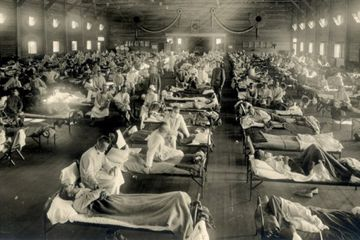

Sebagai upaya pencegahan penyakit cacar air, dianjurkan untuk melakukan vaksinasi cacar air atau vaksin varicella. Di Indonesia sendiri, vaksinasi cacar air tidak termasuk dalam daftar imunisasi rutin lengkap, tapi tetap dianjurkan untuk diberikan.
Peran Pemerintah
Peran pemerintah dalam menanggulangi virus cacar ini dengan memberikan vaksin kepada seluruh masyrakat indonesia dan memberikan pelayanan kesehatan dengan baik, dan memberikan penyuluhan kepada seluruh masyarakat agar tidak berkontak langsung dengan penderita virus ini ,dan menghimbau kepada seluruh masyarakat untuk terus menjaga kesehatan dan makan makanan yang bergizi.
group
Kesadaran Masyarakat
Selain peran pemerintah, kesadaran masyarakat juga sangat dibutuhkan. Karena kalau pemerintah sudah bertindak, namun masyarakat tidak berperan apapun itu semua akan percuma. Maka dari itu masyarakat juga seharusnya melakukan:
1.) Perbanyak minum dan makan makanan yang lembut.
2.) Tidak menggaruk ruam atau luka cacar air.
3.) Menggunakan pakaian yang lembut dan ringan .
4.) Menggunakan masker untuk mengurangi korban virus ini.
Cara meminimalisir Penyakit Cacar
Vaksin adalah cara mencegah cacar air paling ampuh. Sejauh ini cara mencegah cacar air yang paling efektif adalah dengan melakukan imunisasi atau vaksin cacar. Para ahli dari CDC menyatakan jika imunisasi cacar air sangat aman dan ampuh dalam memberikan perlindungan lengkap dari virus penyebab cacar air. Sebanyak 90 persen orang sudah mendapatkan vaksin tidak akan terkena cacar air. Meskipun ternyata imunisasi tidak memberikan perlindungan secara lengkap, tapi setidaknya vaksin cacar bisa mengurangi gejala atau keparahan penyakit cacar.

Jika ada salah satu keluarga di rumah terkena cacar air dan Anda belum melakukan vaksinasi cacar air, Anda bisa mencegah penularannya dengan:
1. Selalu menggunakan masker ketika melakukan interaksi dengan anggota keluarga yang kena cacar.
2. Rajin cuci tangan menggunakan sabun, terutama setelah kontak dengan orang yang sedang cacar.
3. Untuk sementara tidak berbagi barang pribadi (handuk, pakaian, atau sisir) dan tidur sekamar dengan orang yang sedang cacar.
4. Pisahkan baju atau seprai orang yang sedang kena cacar saat dicuci.
5. Segera menyeka benda atau permukaan yang terkena kontak langsung orang yang sedang cacar dengan menggunakan cairan antiseptik.
Jika menyadari telah terpapat virus cacar air, segera konsultasikan pada dokter untuk mendapatkan vaksin yang mencegah penyakit ini sesegera mungkin.